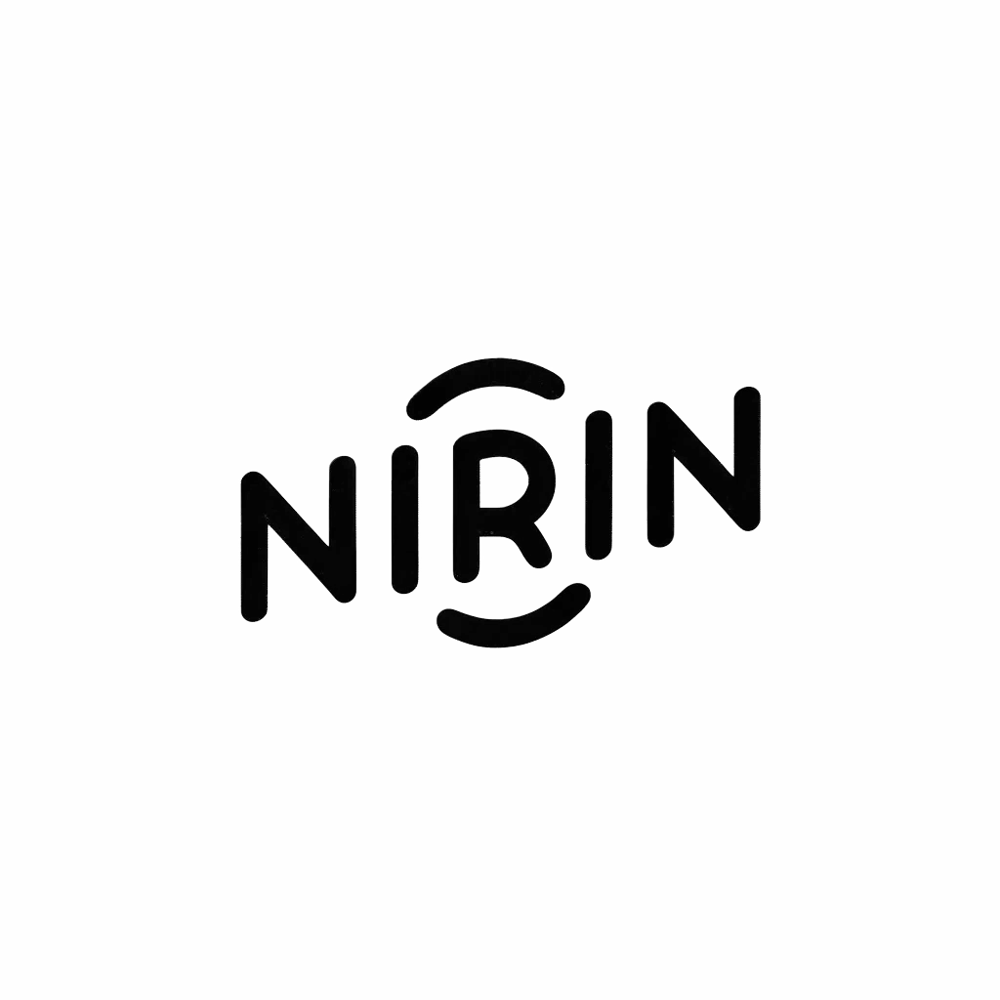

Niclas Rindelhardt

Zusammenfassung
Ich bin eine viel arbeitende Person, mit einem Auge für's Detail.
Bildung
Abitur - Geschwister Scholl GyO
- 2018 - 2021
- Leistungskurse: Chemie, Geografie
Kaufmann für Spedition und Logistikdienstleistung
- seit 08.2022 - vsl. 12.2024
- Berufsschule: BSGAV
- Ausbildungsbetrieb: DSV Air & Sea Germany GmbH
Bachelor of Arts Business Administration
- seit 03.2023 - vsl. 07.2026
- Hochschule: FOM Hochschule Bremen
Fähigkeiten
- Englischkentnisse: ⭐️⭐️⭐️
- Microsoft Offices: ⭐️⭐️⭐️⭐️
Meine Hobbies
Kontakt